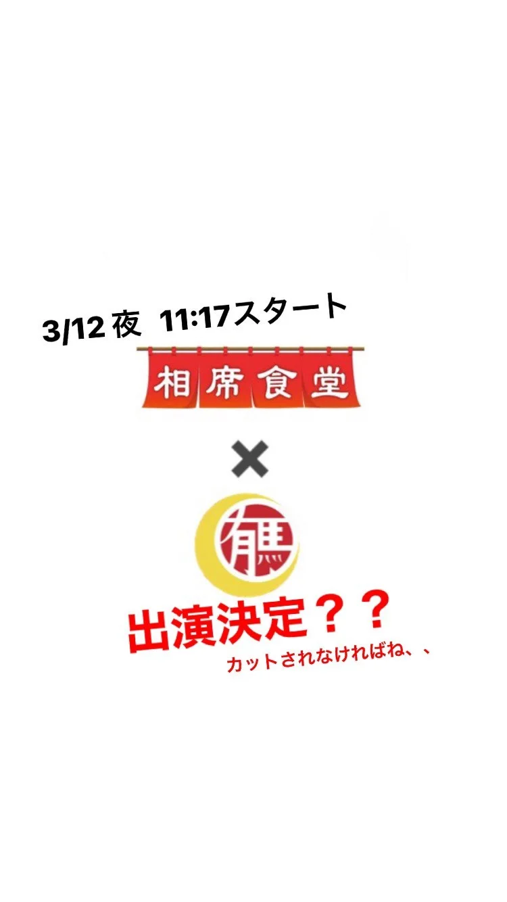

2024年3月12日
僕がいつも見ている番組が３つあります。

僕がいつも見ている番組が３つあります。 クレイジージャーニー 水曜日のダウンタウン そして、、、、 相席食堂！ 人生でこんな事あるけ！？ 見てる番組に出れるかもしれんなんてあるけ？？ ちょっと待てぇー 出れたらきっと今回が人生のピークやと思います。。 カットされなかったら出ますので 期待せずにご覧ください！！ #相席食堂#りんごちゃん #中華バル#中華#中華料理#福島区グルメ#路地裏#B級グルメ#中国#チャイニーズ#路地裏チャイニーズ有馬#有馬#シュウマイ#餃子#点心#麻婆豆腐